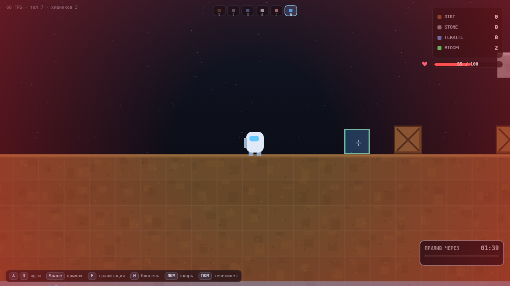
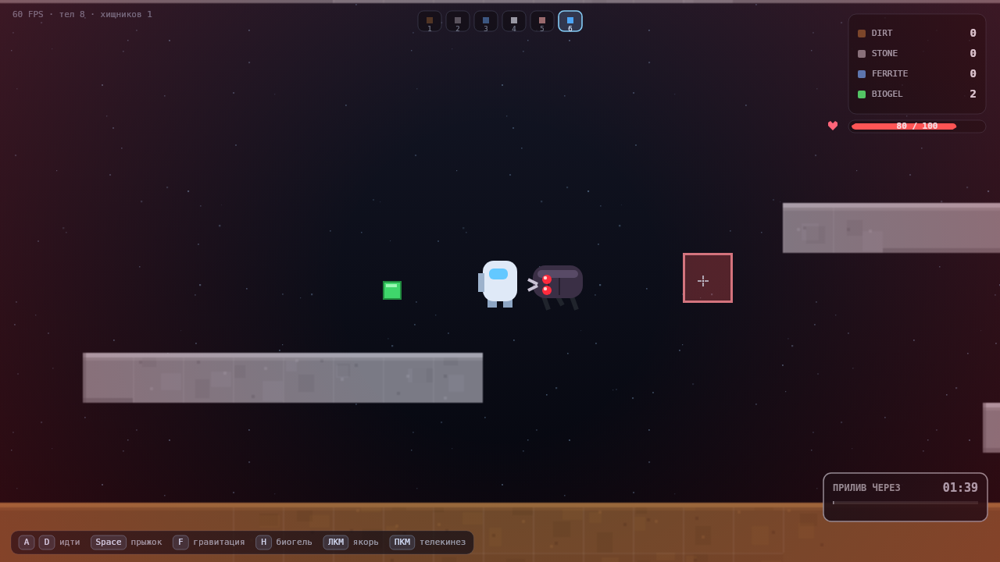
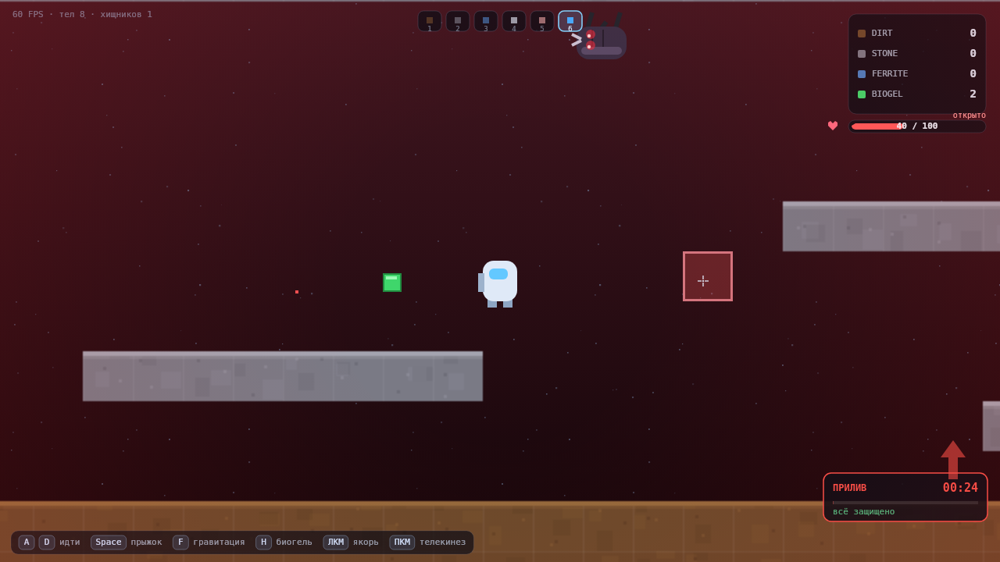
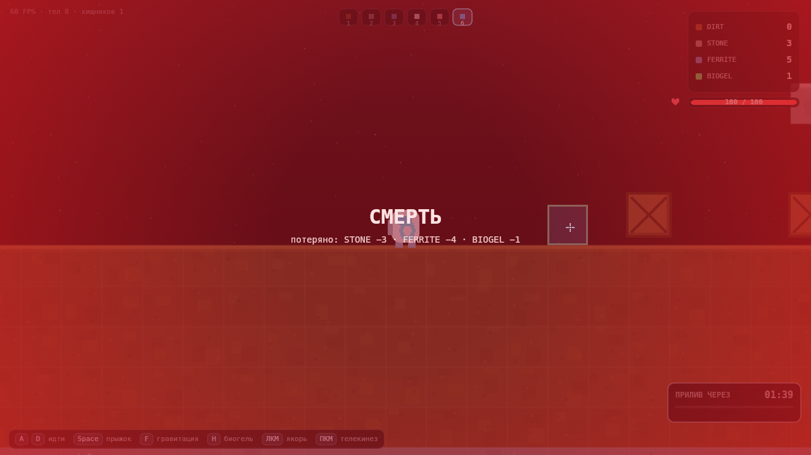
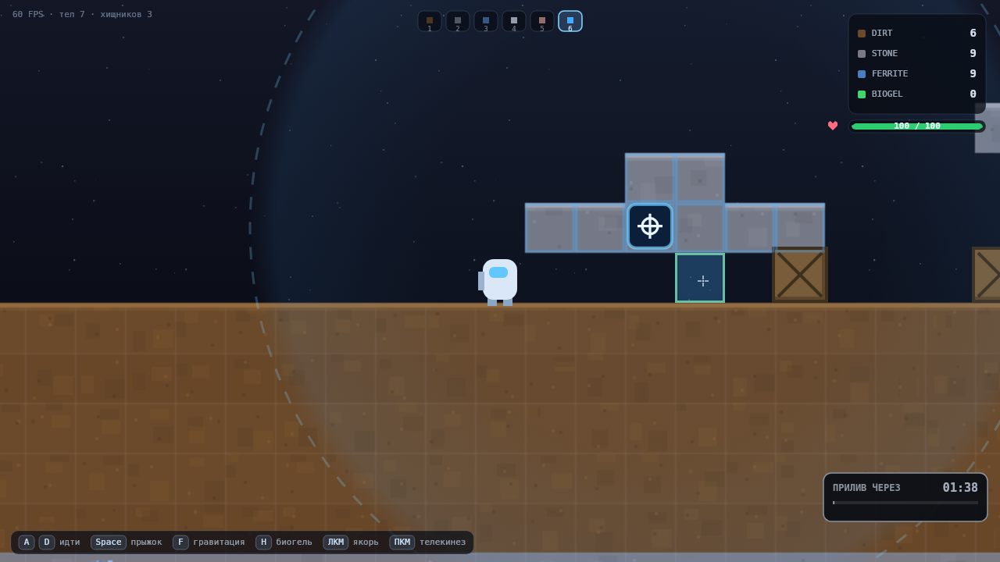
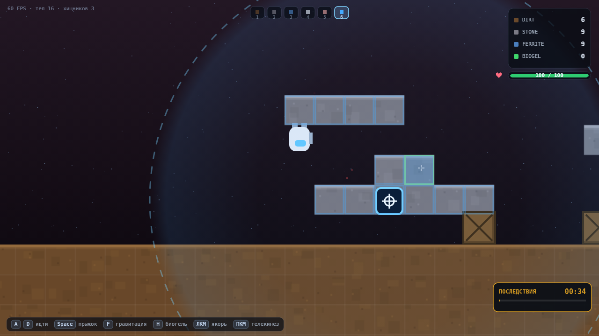

01Сборка

GRAVITY: VOID — M3
A / D — идти · Space — прыжок · F — гравитация · H — биогель · ЛКМ — действие режима · ПКМ — телекинез · 1–6 — режимы
02Критерии M3
| Критерий | Как сделано | |
|---|---|---|
| Полоска здоровья в HUD | Красная шкала под инвентарём, цифры HP / 100, сердце, вспышка при уроне | да |
| Урон от падения | vy > 800 → (vy − 800) / 10; удар о плиту в приливе не считается падением | да |
| Урон от прилива | Вылет за верх мира без укрытия → −30; под куполом с потолком над головой → 0 | да |
| Смерть и респавн | Красный экран, −50 % ресурсов (floor), респавн на старте, HP 100, лог в консоль | да |
| Хищник спавнится, ползёт, агрится, кусает | 3 шт. в пещерах, 32×24, IDLE / AGGRO (8 тайлов) / FLEE (< 20 % HP), укус 10 / 1 с | да |
| Хищник умирает от ящика | Удар летящего ящика 15, HP 30 → два удара; яма с заваливанием тоже работает | да |
| BIOGEL с хищника | 50 % с трупа, 4 шт. предразмещены в пещерах | да |
H лечит | 1 BIOGEL → +40 HP, четвёртая зелёная строка инвентаря | да |
| Разрушение 10 %/с | max(2, floor(placed × 0.1)) раз в секунду вместо 1 тайла за 5 с | да |
| review.html под M3 | Эта страница | да |
03Что работает
Здоровье
- 100 HP, полоска под инвентарём, цвет зелёный → жёлтый → красный.
- Урон: щелчок красной рамкой по краям экрана, тряска камеры, цифра мигает.
- 2 с неуязвимости после респавна — иначе хищник добивает на точке возрождения.
Смерть как урок
- Красный экран «СМЕРТЬ» и список потерь:
STONE −3 · FERRITE −4. - Теряется ровно половина каждого ресурса с округлением вниз: 7 → 4.
- Лог в консоль:
[M3] смерть (прилив), потеряно: …
Хищник
- Жук 32×24, красные глаза светятся ярче в погоне, лапы перебирают по скорости.
- Ползёт по пещерам в радиусе 5 тайлов от дома, перепрыгивает уступы.
- Раненый (< 20 %) убегает — догнать можно, но не стоя на месте.
Прилив и хищник
- В катастрофе жук тоже улетает вверх и цепляется за потолок вверх ногами.
- Через 1.2 с отцепляется и бросается на игрока.
- Если спрятаться под куполом — жук остаётся снаружи, но кусает подошедшего.
BIOGEL
- Ярко-зелёный куб 12×12 с пульсирующим ореолом и зелёная строка в HUD.
- 4 шт. лежат в пещерах — за ними надо спускаться, риск того стоит.
Hпри полном здоровье не тратит гель, а пишет «здоровье полное».
Прилив стал настоящим
- 10 % незащищённых построек в секунду, минимум 2: 20 блоков → 2/с, 100 блоков → 10/с.
- В панели фазы видно «без защиты: N (−K/с)» — K это реальная скорость.
- За 25 с катастрофы незащищённая база из 100 блоков теряет ~92 %.
04Дефекты и неприятности
Прилив не убивает, а бьёт по 30
- Вылет за мир = −30 и телепорт обратно. За одну катастрофу можно влететь 4 раза.
- Два вылета подряд при HP 60 → смерть без шанса понять, что произошло.
- Кандидат: −30 при первом вылете, дальше урон растёт (30 / 45 / 60).
Укрытие требует и купола, и потолка
- По спеке: «под потолком внутри купола». На открытом полу купол не спасает.
- Найти такое место в первую катастрофу почти нереально — нужно строить заранее.
- Подсказка в HUD («под куполом» / «открыто») появилась, но её замечают поздно.
Хищник в приливе почти безвреден
- Он висит на потолке и рывком уходит вниз, но мировая гравитация тянет его обратно.
- Укус возможен только в короткое окно касания.
- Сейчас это атмосфера, а не угроза — решается отдельным «прилипанием» к игроку.
Ящик-оружие требует скорости
- Урон только если ящик летит быстрее 260 px/s, иначе жук невредим.
- Попасть телекинезом по ползущему жуку — навык, но 2 удара из 3 теряются в молоко.
- Кандидат: разрешить урон от брошенного ящика без разгона.
Смерть не возвращает на «последнюю землю»
- По спеке «старт / последняя точка респавна», но чекпоинтов нет — всегда старт.
- В глубокой пещере смерть = долгая дорога обратно.
Нет звука
- Укус, смерть, лечение — только визуальные сигналы. Звук требует ассетов.
05Скоуп
| Что | Почему так | Что делать |
|---|---|---|
| Урон от падения не работает в приливе уточнение спеки |
В катастрофе игрока швыряет о верхнюю плиту на 1100 px/s. Если считать это падением, к 30 от прилива добавляется ещё 30 — смерть за один вылет. | Оставил: в приливе урон даёт только прилив. Прошу подтвердить. |
| Укрытие считается по последней точке на земле иначе укрытие не сработает никогда |
Игрока уже вынесло за мир, когда мы проверяем укрытие. По текущей позиции ответ всегда «нет». | Проверяю купол и потолок в точке, где он стоял. Это единственное прочтение, при котором правило работает. |
| Хищник «падает» на игрока сквозь прилив 4.2 против физики |
Спека: «цепляется за потолок и падает на игрока». Мир при этом тянет всё вверх. | Через 1.2 с висения даю рывок вниз (340 px/s) — он реально достаёт игрока. Прошу подтвердить или заменить на «плюётся сверху». |
| BIOGEL как отдельный предмет, не тайл техническое |
Иначе зелёный куб можно копать и строить из него. | Ничего не нужно, просто фиксирую. |
06Запросы ревью
1. AI: что было сложнее всего
Не состояния, а прилив. Один и тот же жук должен ползти, лететь вверх и «падать» вниз. Пришлось ввести HANG как пятое состояние и рывок.
2. Смерть — «моя вина»?
В пещере — да: полез к жуку без геля. От прилива — нет: вылет за мир выглядит как баг, даже когда это правило.
3. 10 %/с убивает стройку?
Незащищённую — да, за 25 с остаётся 7 %. С якорем — нет. Так и задумано, но это уже не «подлатать», а «строить заново».
4. Нужен ли чекпоинт?
Сейчас респавн только на старте. В пещере это 30 с дороги.
5. Ящик как оружие — хватает?
2 удара по 15 требуют попасть дважды. Может, дать 30 за удар, но раз в 3 с?
6. Три хищника или один?
Сейчас 3 в 200×100 тайлов — встреча редкая. Больше — страшнее, но и награда выше.
07Скриншоты







08Как проверено
# 129 автопроверок логики, физики и критериев M3 cd tools node verify.mjs # → 129/129 проверок пройдено node screenshots.mjs # → кадры в ../screenshots node perf.mjs # → p50 6.3 мс, p95 7.2 мс на кадр
Что покрыто
- Здоровье, урон от падения по формуле, мягкое падение без урона.
- Прилив: −30 без укрытия, 0 под куполом с потолком.
- Смерть: −50 % ресурсов, респавн, неуязвимость, красный экран.
- Хищник: спавн в пещерах, IDLE → AGGRO → FLEE, укус, урон от ящика, смерть.
- BIOGEL: 4 на карте,
Hлечит на 40, без геля не лечит. - Прилив: 2 тайла на малой базе и 10 % на 60 постройках.
- Регрессия M2: якорь, защита, сейв, цикл фаз, купол дугой.
Чего проверки не делают
- Не браузерный FPS: цифры — время JS+draw в headless.
- Не проверяют, страшно ли в пещере: это только руками.